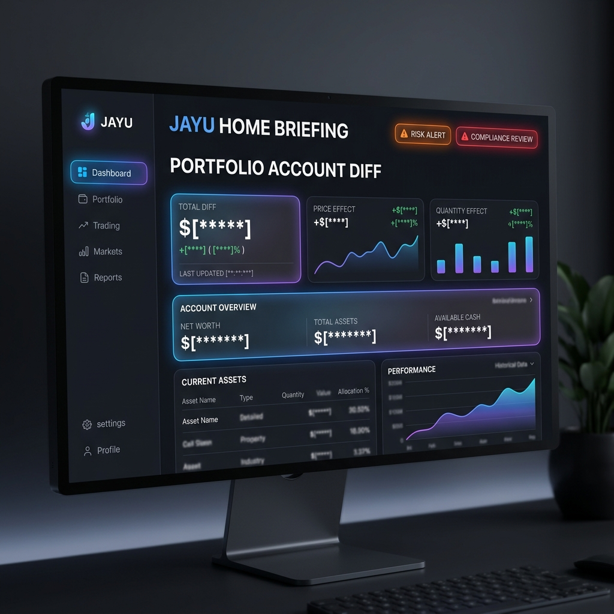
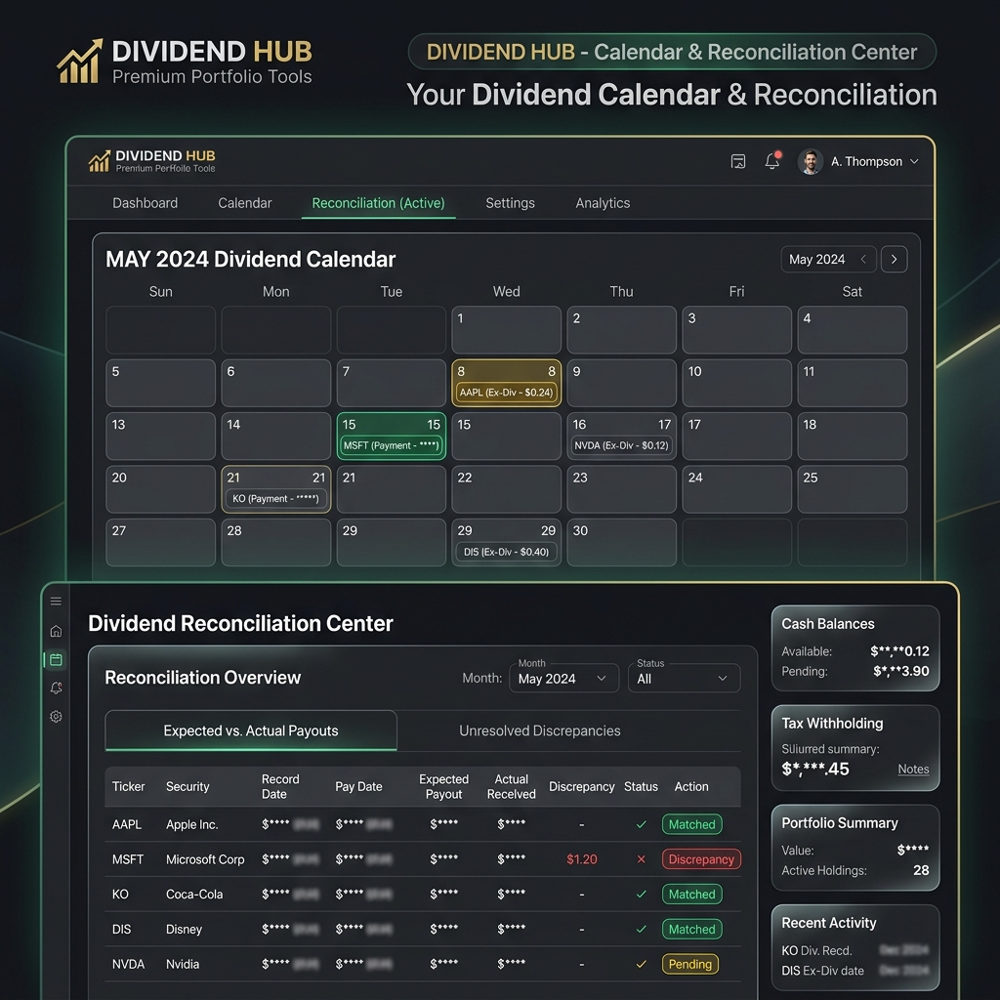

Jayu (자유) 투자 운영 OS
실계좌 기반 투자 의사결정 및 배당 관리 플랫폼 전체 메뉴 상세 사용자 매뉴얼
1. 개요 및 시스템 아키텍처
Jayu는 단순한 주식 시뮬레이터나 자동 매수·매도 봇이 아닙니다. 토스(Toss)의 Read-Only API를 활용하여 사용자의 실계좌 데이터를 안전하게 조회하고, 다중 데이터 소스 교차 검증, 개인 투자 정책 심사(Risk Gate), 예상-실제 배당 대사, 신호 사후 성과 추적을 원스톱으로 지원하는 실계좌 의사결정 지원 시스템(OS)입니다.
2. 메뉴별 기능 및 화면 상세 설명
대시보드 상의 모든 데이터 영역은 개인 정보 보안을 위해 금액 및 수치 정보가 자동으로 안전하게 마스킹(블러 처리)되어 캡처되었습니다.
Group 1: 운영 현황 & 분석
01. 개요 (Overview)
대시보드의 진입점 홈 화면입니다. 최상단 브리핑 영역에서 오늘의 위반 사항을 요약 제안하며, 포트폴리오 자산 변동의 원인을 정밀 분해 분석합니다.
- 화면 설명:
JAYU HOME BRIEFING카드는 한도 초과나 배당 누락을 경고합니다.PORTFOLIO ACCOUNT DIFF는 자산 증감을 가격 변동(Price Effect)과 수량/거래 변동(Quantity Effect)으로 나누어 시각화합니다. - 주요 표출 항목: 총 평가 자산, 직전 대비 변동액, Price Effect 기여도(%), Quantity Effect 기여도(%), 데이터 무결성 점수.
- 운영 팁: 매일 아침 브리핑 카드의 경고를 점검하고, 자산 감소가 시장 폭락 때문인지 단순 거래 이탈 때문인지 구분하여 전략을 보완하십시오.

02. 주식 & 경제 분석 (Analysis)
보유 자산 및 관심 종목의 기술적 지표 추이와 글로벌 매크로 지표의 흐름을 다중 레이아웃 차트로 비교 분석합니다.
- 화면 설명: 종목 검색을 통해 EMA, MACD, 볼린저 밴드, 스토캐스틱 RSI 지표를 그리며, 미국 연준 기준금리나 VIX 지수를 동일 선상에서 매핑합니다.
- 주요 표출 항목: 종목별 봉 차트, 보조지표 패널, VIX 대비 모멘텀 상관관계 테이블, 자산별 60일 변동성.
- 운영 팁: VIX 지수가 20을 초과하거나 시장 모멘텀이 BEAR 국면으로 전환되는 경우, 신호가 나더라도 진입 비중을 평소의 50%로 자동 감축하십시오.

03. 포트폴리오 허브 (Portfolio Hub)
전체 계좌의 비중 구성과 세부 보유 자산의 리밸런싱 필요 상태를 종합 모니터링합니다.
- 화면 설명: 보유 종목의 실시간 비중이 정책 한도(25%)를 준수하는지 점검하고, 초과 시 즉각 부분 매도 권장 액션을 제안합니다.
- 주요 표출 항목: 전략별 자산 배분 비중, 종목별 보유 금액 및 평가 손익, 섹터별 노출 비율, 리밸런싱 권장 수량.
- 운영 팁: 단일 종목 비중이 한도를 초과하면 해당 종목 카드 옆에
rebalance빨간색 경고 배지가 자동으로 표출됩니다.

04. Ask Jayu - AI (Ask Jayu)
대시보드 내장 AI 투자 비서에게 자연어로 질의하고 실시간 근거 기반의 안전한 해설 답변을 받습니다.
- 화면 설명: 포트폴리오의 리스크 요인이나 다음 달 배당 스케줄에 대해 질문하면, 가드레일이 유효성을 검증하여 실시간 답변을 작성합니다.
- 주요 표출 항목: AI 대화창, 추천 질문 퀵 가이드, 에이전트 도구 호출 가드레일 상태창, 참조 문서 링크.
- 운영 팁: 답변 끝에 바인딩된
file:///...형식의 로컬 원장 링크를 클릭하여 생성된 통계 수치의 정확성을 대조할 수 있습니다.

Group 2: 투자 실행 & 리스크
05. 리스크 게이트 (Risk Gate)
최대 레버리지(15%), 최소 현금(10%), 단일 종목 한도(25%) 등 자산 배분 통제 규정을 실시간 게이지 차트로 관리합니다.
- 화면 설명: 3대 리스크 예산의 실시간 소진율을 나타냅니다. 한도 돌파 시 즉각 위험 경보를 발생시킵니다.
- 주요 표출 항목: 레버리지 노출율(%), 현금 비중(%), 단일 종목 최대 노출율(%), 리스크 한도 초과 경고 로그.
- 운영 팁: 게이지 바가 적색 위험 영역으로 진입하면, 신규 주문 실행 기능이 리스크 게이트에 의해 자동으로 원천 차단됩니다.

06. 신호 (Signals)
유전자 최적화 엔진이 당일 도출해낸 최종 트레이딩 진입 신호 목록을 제공합니다.
- 화면 설명: BULL, BEAR, SHOCK 등 국면별 독립 파라미터가 반영된 ADX 필터를 거쳐 생성된 신호를 표출합니다.
- 주요 표출 항목: 신호 발생 시간, 대상 종목, 거래 방향(BUY/SELL), 진입 권장가, 추천 비중, 신호 발생 로직 근거.
- 운영 팁: 당일 거시 경제 불안정성이 극대화되는 경우, 신호가 활성화되더라도 리스크 가드가 즉시 보류(warn) 처리를 가합니다.

07. Trader Lens (Trader Lens)
최근 체결된 주문의 체결 단가 적정성을 시장 평균 단가와 비교해 거래 비용을 분석합니다.
- 화면 설명: 시장가 주문 시 발생하는 슬리피지(Slippage, 체결 오차) 및 체결 시점의 호가 스프레드 효율성을 도표로 평가합니다.
- 주요 표출 항목: 주문별 체결가, 체결 시점 시장 평균가, 슬리피지 발생액(KRW/USD), 주문 유형별 거래 비용 효율성 지표.
- 운영 팁: 특정 종목에서 슬리피지가 평균 0.3%를 초과하는 경우, 매매 실행 시점을 거래량이 풍부한 본장 시작 1시간 후로 조율하십시오.

08. Shadow 승격 (Promotion)
모의투자(Shadow Trading) 전략들의 가상 성과 지표가 실계좌로 이전하기 위한 조건에 충족하는지 검사합니다.
- 화면 설명: 샤프 지수 2.0 돌파 여부, 최대 낙폭(MDD) 제한 기준, 최소 거래 일수 충족도를 체크리스트로 평가합니다.
- 주요 표출 항목: 섀도우 전략 목록, 누적 샤프 지수, 테스트 일수, 승격 조건 통과율(%), 승격 가부 판정 배지.
- 운영 팁: 심사 지표가 모두 통과되면
Eligible승격 가능 배지가 노출되며, 포트폴리오 배분 비중을 즉시 할당받을 수 있습니다.

09. 자동매매 준비 (Autotrading)
실제 자동 주문이 실행되기 전 시스템의 통신 상태 및 안전 장치 정상 여부를 최종 검증합니다.
- 화면 설명: API 토큰 유효 기한, 토스 계좌 원격 핑(Ping) 성공 여부, 필수 스냅샷 데이터 신선도 등의 사전 검사를 수행합니다.
- 주요 표출 항목: 시스템 가동 상태(Ready/Blocked), API 인증 상태, 계좌 비밀번호 유효성 여부, 최종 안전 잠금장치 설정값.
- 운영 팁: 체크 항목 중 단 하나라도
Blocked상태가 발견되면, 예기치 못한 비정상 거래 방지를 위해 시스템 기동이 일체 차단됩니다.

Group 3: Toss 증권 연동
10. Toss Account (Toss Account)
Toss API를 통해 실계좌 잔고, 예수금 상태, 주식 평가 금액 등 상세 자산 현황을 실시간 조회합니다.
- 화면 설명: 원화/외화 예수금 잔액과 보유 주식 평가액을 조회하며, 로컬 원장 장부 데이터와 1대1 매칭 및 대사를 수행합니다.
- 주요 표출 항목: 원화 예수금, 달러 예수금, 총 평가 금액, 종목별 보유 수량 및 매입 단가, 원격-로컬 데이터 일치도 점수.
- 운영 팁: 계좌 정보에 미세한 수량 불일치가 있을 경우 우측 상단의
Sync동기화 기능을 구동해 즉시 정밀 대사를 완료하십시오.

11. Toss Market (Toss Market)
Toss 증권 서버로부터 수신한 상장 종목들의 마스터 데이터 및 호가 스프레드를 모니터링합니다.
- 화면 설명: 거래 가능한 정규 주식/ETF 마스터 리스트를 제공하며, 실시간 시세와 호가 괴리율을 추적합니다.
- 주요 표출 항목: 종목 마스터 리스트, 실시간 호가 정보, 호가 스프레드율(%), 거래 주의/경고 지정 여부.
- 운영 팁: 호가 스프레드 비율이 높은 종목은 거래량이 적고 거래 비용이 높으므로 지정가 매매 가이드를 따르십시오.

Group 4: 개인 자산 & 재무 계획
12. 투자 목표 & 계획 (Goal Planner)
목표 달성 달러 인컴 금액(월 300만원) 도달을 위한 장기 포트폴리오 복리 성장 모델을 예측합니다.
- 화면 설명: 현재 자산 규모와 월 적립금을 대입해, 은퇴 인컴 도달에 소요되는 연도 타임라인을 그래프로 매핑해 줍니다.
- 주요 표출 항목: 목표 금액(KRW), 현재 누적 자산, 목표 달성 예상 소요 연도, 연도별 복리 성장 곡선 차트.
- 운영 팁: 포트폴리오의 평균 배당 수익률이 1%p 개선되면 목표 달성 시점이 약 2.4년 단축되는 효과를 즉시 시뮬레이션할 수 있습니다.

13. 현금흐름 배분 (Cashflow)
매월 정기적 유입 소득(월급 등) 발생 시 원칙에 맞게 현금을 계좌별로 강제 분배하는 설계 도구입니다.
- 화면 설명: 자산 배분 비중 및 최소 현금 비율 정책(10%)에 기초해, 유입 현금의 계좌별 자동 배치액 지침을 출력합니다.
- 주요 표출 항목: 월간 총 유입 현금, 안전 현금 유보액, 전략별 배분 대상 금액, 계좌별 이체 지침 텍스트.
- 운영 팁: 소득이 발생하는 즉시 지침 금액을 이체함으로써, 충동 매수를 차단하고 포트폴리오의 안전 현금을 확보하십시오.

14. 배당 관리 (Dividend)
월별 예상 배당 스케줄과 실제 계좌에 입금된 내역을 대조하여 지급 누락이나 세금 오차를 찾아냅니다.
- 화면 설명: 세후 배당 예상액 캘린더와 실제 입금 원장(
dividend_actual_receipts.csv)의 데이터를 1대1로 대조 매칭합니다. - 주요 표출 항목: 월별 예상 세후 배당금 총액, 배당락일 스케줄러, 예상 배당금 vs 실제 입금액 비교 테이블, 오차 상태 배지(Matched/Missing/Delayed).
- 운영 팁: 배당금 지급 예정일로부터 3일 경과 후에도 입금 대사가 되지 않으면
Missing배지가 노출되므로 누락 여부를 확인하십시오.

15. 투자 코치 & 다이어트 (Investor Coach)
매매 중독 여부 및 포트폴리오 과회전율을 자가 진단하여 나쁜 거래 버릇을 코칭합니다.
- 화면 설명: 하루 거래량 제한 위반, 손절 직후 재매수 행위(5일 냉각기 위반)를 적발해 한글 코칭 리포트를 발행합니다.
- 주요 표출 항목: 투자 코치 종합 점수(100점 만점), 뇌동매매 탐지 횟수, 포트폴리오 다이어트 제안서(한글), 위험 자산 과다 노출 경보.
- 운영 팁: 자가 진단 점수가 80점 미만으로 강등되는 경우, 시스템이 일일 최대 주문 한도를 자동으로 5회 이하로 강제 통제합니다.

16. 투자 캘린더 (Invest Calendar)
배당락일, FOMC 회의 등 거시 경제 지표 발표일과 포트폴리오 리밸런싱 일정을 병합 관리합니다.
- 화면 설명: 매크로 이벤트의 영향력 등급을 분류하여 위험 일정을 한눈에 모니터링할 수 있는 일 달력 뷰입니다.
- 주요 표출 항목: 월간 일정 달력, 주요 이벤트 리스트, 스케줄별 위험 가중치 색상 표시.
- 운영 팁: 캘린더에 표시된 고위험 연준 발표일 등에는 트레이딩 시스템을 자동으로 대기(Hold) 상태로 운용할 수 있습니다.

Group 5: 시스템 로그 & 설정
17. 데이터 품질 (Data Quality)
Yahoo, Tiingo, Toss 데이터 피드 간의 시세 오차율 및 데이터 무결성 상태를 감독합니다.
- 화면 설명: 세 가지 경로 시세 데이터를 크로스 체크하여 괴리율이 일정 범위를 벗어난 이상 데이터를 격리 격벽 처리합니다.
- 주요 표출 항목: 데이터 소스별 성공률(%), 시세 데이터 괴리율(%), 무결성 점수(Trust Score), 격리된 이상 데이터 로그.
- 운영 팁: 무결성 점수가 90점 미만인 날은 데이터 소스간 교차 검증 오류가 발생한 것이므로 원격 연결 상태를 점검해야 합니다.

18. API 모니터링 (API Monitoring)
시스템이 호출하는 연동 파트너사 API들의 응답 속도와 에러 빈도를 시각화합니다.
- 화면 설명: API별 레이턴시 추이 및 응답 에러율을 분석하여 외부 네트워크 커넥션 상태를 등급화합니다.
- 주요 표출 항목: API 소스별 응답 속도(ms), 최근 24시간 호출 성공률(%), 네트워크 에러 이력 로그.
- 운영 팁: 평균 지연이 1500ms 이상으로 상승하면 보조 Tiingo/Yahoo 데이터 백업 스위칭 규칙이 구동됩니다.

19. 시뮬레이션 로그 (Simulation Log)
단타 시뮬레이션 엔진이 Walk-Forward 다중 구간 최적화 연산을 처리하는 진화 과정을 표시합니다.
- 화면 설명: 유전자 알고리즘의 세대 반복별 피트니스 적합도 개선과 조기 종료 과정을 실시간 로그로 출력합니다.
- 주요 표출 항목: 세대별 피트니스 점수, 현재 진화 진행률(%), 조기 종료(Early Stopping) 작동 상태 로그.
- 운영 팁: 피트니스가 수렴하지 않고 수백 세대 동안 지체되는 경우, 유전자 변이율 파라미터를 소폭 확대 조정하십시오.

20. 실행 이력 & 로그 (Run History)
매일 수행된 스케줄러 배치 작업의 이력과 분석 결과 증거 파일의 상태를 감증합니다.
- 화면 설명: 과거 배치 실행 스냅샷 리스트를 제공하며, 클릭 시 해당 시점의 리포트 전문을 조회할 수 있습니다.
- 주요 표출 항목: 배치 실행 타임스탬프, Run ID, 실행 결과 상태(Success/Failed), 증거 파일(Evidence) 생성 유무.
- 운영 팁: 과거 특정일의 거래 의사결정 기록을 정밀 감사해야 할 때 본 이력 로그에서 증거 아카이브를 열어 검토하십시오.

21. 설정 검증 (Settings)
환경 설정 변수들과 자산 매핑 정보의 무결성을 사전 테스트하고 복원용 백업 리스트를 관리합니다.
- 화면 설명: 설정값들의 포맷과 스키마 오류를 사전에 식별하여 잘못된 설정 배포로 인한 작동 중단을 미리 예방합니다.
- 주요 표출 항목: 설정 스키마 유효성 검사 결과(Pass/Fail), 환경 변수 값 범위 적합성 여부, 설정 파일 백업 리스트.
- 운영 팁: 설정을 추가/변경한 후에는 반드시 이 화면에서
Validate스키마 테스트를 실행해 안전 여부를 확인하십시오.

3. 개인 투자 원칙 설정 및 관리
사용자의 투자 정책 가이드라인은 configs/investment_policy.yaml 파일에서 안전하게 관리됩니다.
policy:
asset_allocation:
max_leverage_ratio: 0.15 # 최대 레버리지 ETF 비중 한도
min_cash_ratio: 0.10 # 최소 안전 현금 보유 비중
max_single_position_ratio: 0.25 # 단일 종목 최대 보유 한도
trading_restrictions:
max_daily_trades: 5 # 일일 최대 주문 횟수
cool_down_days_after_loss: 5 # 손절 후 동일 종목 재진입 제한 일수
max_monthly_loss_krw: 2000000 # 월간 누적 최대 손실 한도
dividend_quality:
min_dividend_trust_score: 80.0 # 최소 준수 배당 신뢰 점수4. MCP 및 에이전트 보안 가이드라인 (Agent Guardrail)
Jayu는 자연어 에이전트 및 MCP(Model Context Protocol) 환경에서 계좌 데이터를 안전하게 질의할 수 있도록 강력한 보안 가이드라인(Guardrail)이 장착되어 있습니다.
- 1. 읽기 전용 권한 매트릭스 (Read-Only Matrix): 에이전트가
write_to_file,run_command등 쓰기/삭제/실행 관련 도구를 무단 호출하는 것을 원천 차단합니다. - 2. 명령어 인젝션 차단: 도구 인수에
rm,bash,sh,powershell,curl,wget등의 위험한 shell 명령어 키워드가 포함될 경우 필터 단계에서 차단 에러를 반환합니다. - 3. 근거 Citation 필수 정책: 에이전트가 포트폴리오 및 자산 현황에 대해 답변할 때, 반드시 근거가 되는 로컬 아티팩트 링크(
file:///...)를 마크다운에 명시하도록 검증합니다.